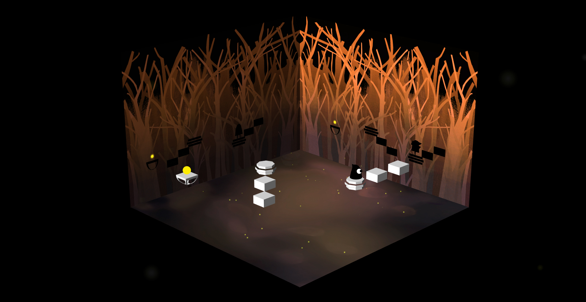
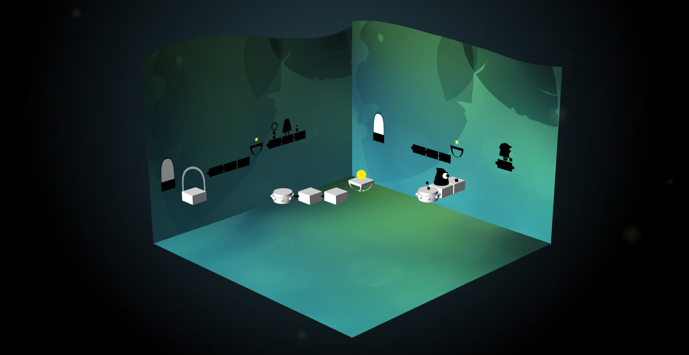
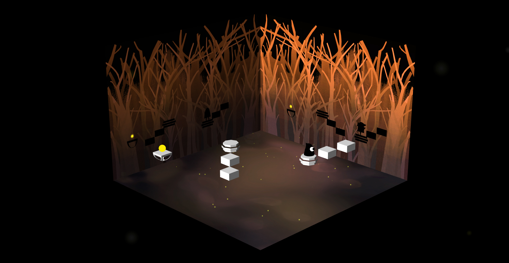
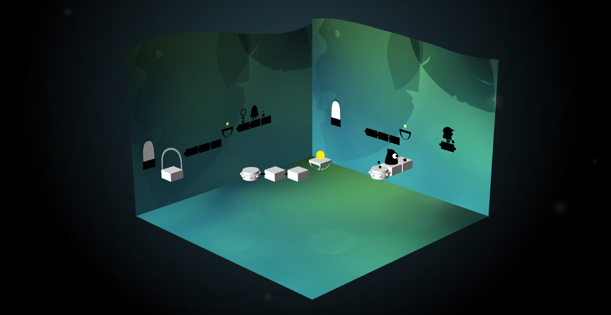

Description
Dissonance is a puzzle adventure game where everything owns two shadows. Lian wakes up and finds himself being trapped. With two shadow character - Lia and Ian, he moves on to explore the past story through the ancient poem. Help Lian solve puzzles in intriguing levels that combine 2D and 3D elements.
Features
* The world displays the relationship between three selves.
* The core mechanics actualize the principle of cognitive dissonance.
* The gameplay uses the idea of how 2D space and 3D space affect each other to implement the abstract concept about three selves.
Awards & Honors
"Winner: Most Innovative Game" - Indie Prize, Casual Connect USA, 2015
"Official Selection" - Out of Index: Experimental Game Festival, 2015
History
Dissonance is a platform-puzzle game developed by Zi Li as her Master thesis. After spending a half year exploring different concepts during thesis preparation class, Zi started a digital prototype. Zi wants to make a fun game that indicates conflicts within people’s mind. Zi and the team spent 6 months exploring a balanced core mechanic. After going through lots of failure, they come up with the idea of using dimensional spaces to reflect the psychological concept of cognitive dissonance.
Screenshots

 


